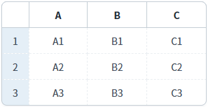
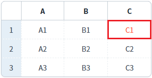
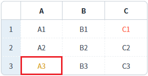

GridView의 'setCellColor를' 메소드를 사용하여, 특정 셀의 글자색을 설정한 예제입니다.
셀의 글자색 설정하기
1
STEP 1: 초기 상태 확인하기
GridView의 셀에 별도의 스타일이 설정되어 있지 않습니다.
Image 1.브라우저(Chrome) 실행 예시

2
STEP 2: 셀의 글자색을 변경합니다.
"첫 번째 행의 'C' 컬럼의 셀의 글자색을 'tomato'로 설정하기" 버튼을 클릭합니다.
3
STEP 3: 실행 결과를 확인합니다.
첫 번째 행의 'C' 컬럼의 셀의 글자색이 'tomato'로 변경됩니다.
Image 2.브라우저(Chrome) 실행 예시

4
STEP 4: 셀의 글자색을 변경합니다.
"세 번째 행의 'A' 컬럼의 셀의 글자색을 '#DAA520'으로 설정하기" 버튼을 클릭합니다.
5
STEP 5: 실행 결과를 확인합니다.
세 번째 행의 'A' 컬럼의 셀의 글자색이 '#DAA520'으로 변경됩니다.
Image 3.브라우저(Chrome) 실행 예시

1
스크립트를 작성합니다.
GridView의 'setCellColor' 메소드를 사용합니다.
Example 1.Script
//예제 파일의 스크립트 "scwin.btn_ex1_onclick" 또는 "scwin.btn_ex2_onclick"를 참고하세요. //GridView 'grd_exam1'의 첫 번째 행의 'C' 컬럼의 셀의 글자색을 'tomato'로 설정하기 grd_exam1.setCellColor(0, "col_c", "tomato"); //GridView 'grd_exam1'의 세 번째 행의 'A' 컬럼의 셀의 글자색을 '#DAA520'으로 설정하기 grd_exam1.setCellColor(2, "col_a", "#DAA520");
setCellColor( rowIndex , colIndex , color )